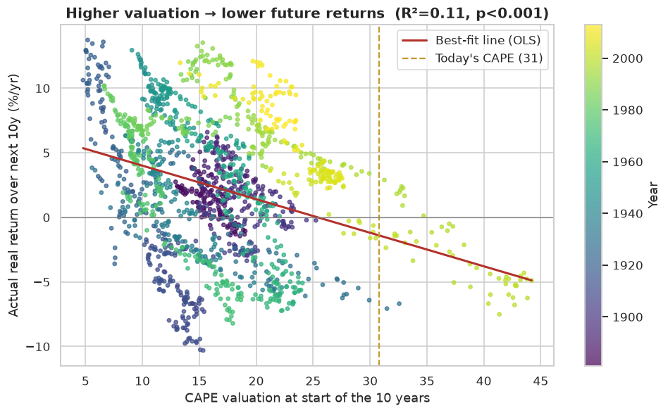
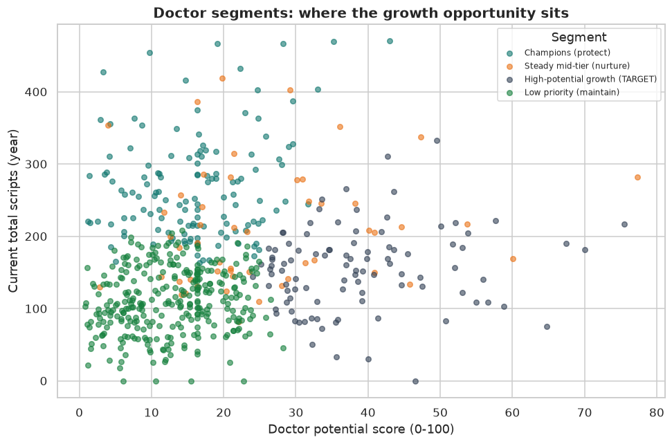
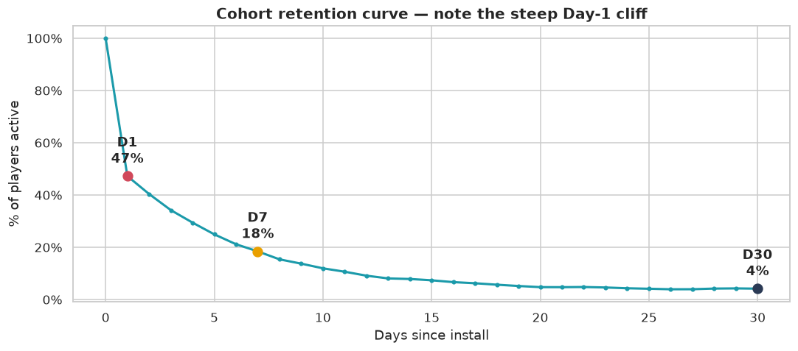

Three end-to-end analytics projects. Each one takes a dataset from raw and messy through cleaning, exploration, statistics or a model, and a clear recommendation, with BI-ready exports for dashboards alongside.


RANK() OVER
Each project ships clean, BI-ready data and a step-by-step build guide for Tableau Public and Power BI. Publishing to Tableau Public is free; paste the resulting link below to make a dashboard live.
Real S&P 500, CAPE, VIX, and drawdowns. Headline: valuation is near record highs.
Scripts by region and product, rep leaderboard, calls vs scripts, doctor segments.
Daily currency flow, item win rates, D1/D7/D30 retention, and the funnel.